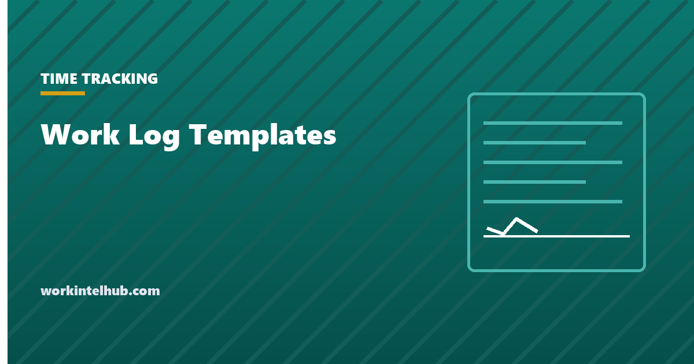

Work Log Templates

A work log records what was done, when, and what came of it. It is older than time tracking software and still does a job software does not: it captures outcomes and context, not just minutes. A log kept for a month tells a manager where a role's time actually goes, tells an employee what to put in a performance review, and tells a client or auditor what happened on a given day.
Five logs are here: a daily work log with time blocks, a weekly activity log that summarises by task type, a project work log tied to deliverables, a remote work log that records availability and output for distributed teams, and a maintenance or service log for people whose work is a sequence of jobs. The Excel file totals hours; Word and PDF print for clipboards and sign-off.
Download the templates
Free files: Word, Excel and PDF
Three files, free, no email required. Word to edit, Excel to track, PDF to print or share.
Templates open in Microsoft Word, Excel, Google Docs and Sheets, LibreOffice and any PDF reader. Free to use and adapt for your organisation.
What is in the templates
- Daily work log. Time blocks with task, outcome and hours, plus the day's top priority and what carries over.
- Weekly activity log. Hours by activity type with the share of the week, which is the view that reveals meeting and email load.
- Project work log. Work done against a deliverable with status, blockers and the next step.
- Remote work log. Availability window, main output and issues per day, for teams that need visibility without monitoring.
- Maintenance log. Jobs, assets, parts, hours and sign-off.
Why a work log beats a timesheet for some jobs
A timesheet answers how long. A work log answers what and so what, which is the question in a performance review, a client dispute, a handover and a capacity conversation. For salaried knowledge workers whose hours are not paid, the log is also less contentious than tracking software: the employee writes it, owns it and can see what it says. The what to measure in remote work guide makes the case for outcomes over activity; the log is how an individual records them.
Two weeks of a weekly activity log is usually enough to show where the time goes. People consistently overestimate core work and underestimate meetings and messages; the share-of-week column makes that visible without an argument.
Keeping a log that gets used
- Write the outcome, not the activity: "sent proposal v2 to client" rather than "worked on proposal".
- Log in the moment or at natural breaks; end-of-day reconstruction loses detail.
- Keep categories few and stable so the weekly summary means something month to month.
- Carry unfinished items forward explicitly; the carried-over column is the honest to-do list.
- Review the week on Friday for ten minutes and write three lines: what moved, what did not, what to change.
When a work log is a legal record
For non-exempt employees a work log that records hours is a time record under the Fair Labor Standards Act and must be accurate and kept two years; the timesheet templates are the better tool for pay. For contractors, a work log supports invoices and demonstrates control over how the work was done. For maintenance and service work, the signed log is often the evidence of what was done to an asset and when; keep it for the life of the asset or the warranty period.
Key takeaways
- A work log records outcomes and context, which a timesheet does not; it is the right tool for reviews, handovers and capacity conversations.
- Two weeks of a weekly activity log shows where time really goes; meetings and messages are always larger than people think.
- Write outcomes, log at natural breaks, keep categories stable, carry unfinished items forward.
- Where the log records hours for a non-exempt employee it is a time record and must be accurate.
Frequently asked questions
What is a work log?
A record of what was done, when and with what result, kept by the person doing the work. Unlike a timesheet, which records hours for pay, a work log captures tasks and outcomes, and it is used for reviews, handovers, client reporting and understanding where time goes.
What is the difference between a work log and a timesheet?
A timesheet records hours worked for payroll and must be accurate under wage law. A work log records tasks and outcomes and may or may not include hours. Non-exempt employees need a timesheet; many salaried and contract workers find a work log more useful.
How detailed should a daily work log be?
One line per task or block of work with the outcome, usually six to twelve lines a day. More detail than that is rarely read; less loses the point. Write the result, not the activity.
Is a work log a form of employee monitoring?
Not in the legal sense: the employee writes it and controls what it says, and it does not capture activity automatically. Requiring one is a normal management practice. Automated activity capture is monitoring and carries notice obligations in several states.
How long should work logs be kept?
If the log records hours for pay, two years under federal rules and longer in some states. Project and client logs should be kept for the contract's dispute period. Maintenance logs are kept for the asset's life or the warranty period.